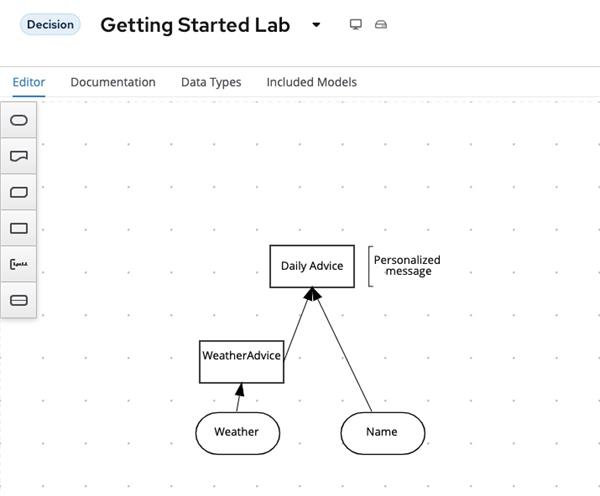

First Virtual Technical Exploration for IBM Business Automation Manager Open Edition on February 8 (EMEA time-zone)
Karina Varela and myself would like to invite you to this free technical exploration (with hands-on labs) on IBM Business Automation Manager Open Edition (BAM) which is the new name for the former Red Hat PAM/DM products that have recently moved to the IBM Business Automation portfolio.
After this session, you will have a good understanding of what this transition means for you. At the same time, you will get familiar with Kogito and design, build and deploy a simple Kogito automation project in OpenShift. The event that is targeted at an European, Middle East and Africa audience. It is also a good chance to get any questions related to the transition answered.
You will need to have your computer at hand for accessing the hands-on labs in the IBM Cloud (any operating system, just browser access is needed). As we expect a high interest in this technical exploration and the number of participants is limited due to the hands-on exercises, please register fast to secure your seat.

Agenda (starting at 9:30 CET)
- IBM Business Automation Manager Open Edition – What the Product Transition Means for You
- Overview of cloud-native business automation with Kogito
- Hands-on lab: From modelling to testing and deploying a business automation in OpenShift
- Demo: Extending the solution with Robotic Process Automation (RPA)
- Some other Business Automation capabilities complimenting IBM Business Automation Manager Open Edition
- Closing
Instructors
- Fadi Sandakly, Nigel Crowther, Reinhold Engelbrecht – IBM Business Automation Technical Sales EMEA